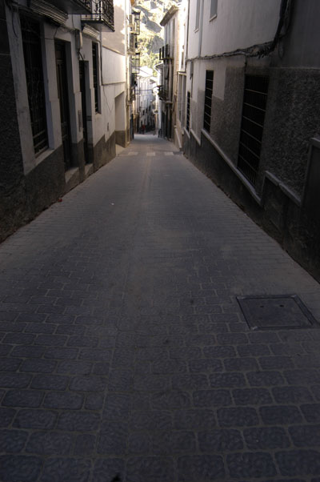

Miércoles, 17 de Abril de 2013 09:20 Laura Fernández @LauraFS4

Otro robo más. Uno de los gimnasios de Cazorla, situado en la calle del Carmen, fue el escenario de un robo ocurrido ayer. Los dueños alertaron a la Guardia Civil de lo ocurrido tras descubrir un expositor del gimnasio roto, donde se encontraban complejos vitamínicos y ropa de deporte, entre otras cosas, según ha manifestado a este medio la Guardia Civil. Así las cosas, al parecer la sustracción no ha sido muy grande.
La Unidad Orgánica de Policía Judicial de la Guardia Civil ha recogido las huellas para intentar localizar a los culpables. Por el momento se continúa investigando.